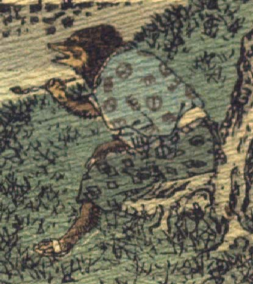

狸。柄の入った青い着物に青緑色の袴を身に付け、草鞋をはいている。木の根元にこしかけ、煙管を手に、画面左側を眺めている。
著作者：J.Dautremer／出典：親書誌：U426_nichibunken_0120：La victoire du petit renard／日付：2006／資源識別子：U426_nichibunken_0120_0012_0000
Copyright (c)2010- International Research Center for Japanese Studies, Kyoto, Japan. All rights reserved.